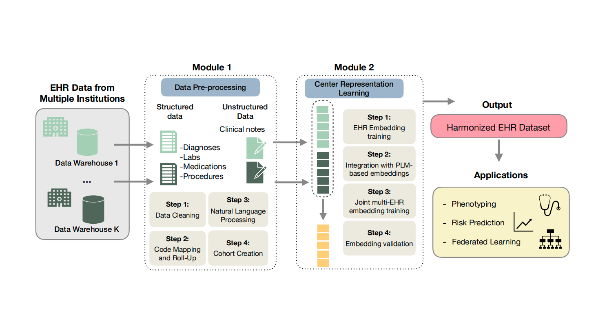

PEHRT
A Common Pipeline for Electronic Health Record (EHR) Data Harmonization for Translational Research
Overview
PEHRT is a modular framework for processing EHR data across multiple institutions. It supports both structured data (diagnoses, procedures, medications, labs) and unstructured text (clinical notes, radiology reports). EHR data may reside in relational databases or flat files (CSV/Parquet/JSON) — no Common Data Model required.

- Works with any EHR system — only requires patient ID, timestamps, and event codes
- Handles both ICD-9 and ICD-10 coding transitions
- Batch processing for datasets from 100K to 5M+ patients
- Dual-language support: Python for preprocessing, R for embeddings
- Multi-institution harmonization via the BONMI algorithm
Modules
Getting Started
Prerequisites, MIMIC-IV access, workspace setup, and EHR data overview.
Module 1: Data Preprocessing
Clean, normalize, and aggregate EHR data into analysis-ready patient-level feature matrices.
4 steps: Data Cleaning → Code Rollup → NLP → Cohort Creation
Module 2: Representation Learning
Generate EHR embeddings using SVD-PMI and pre-trained language models (CODER, SapBERT, BioBERT).
Module 3: Harmonization
Combine data from multiple institutions using the BONMI algorithm for unified embeddings.
Function Reference
Complete API reference for all preprocessing and embedding functions.
Citation
If you use PEHRT in your research, please cite:
Gronsbell, J. et al. “A Common Pipeline for Harmonizing Electronic Health Record Data for Translational Research.” arXiv preprint arXiv:2509.08553 (2025).
PEHRT is developed by the CELEHS Lab at Harvard Medical School.